Executive Summary
One-page leadership readout — key findings and recommended actions
Bottom Line
There is an immediate revenue opportunity worth +2-3% in at least ten markets by raising conventional avocado prices 5%, because demand in those cities barely drops when prices rise. Separately, mid-tier cities (Buffalo-Rochester, Pittsburgh, Indianapolis) are growing sales 25-30% YoY and should receive more supply before competitors fill the gap.
Recommended Actions
| # | Action | Region | Expected Impact | Confidence |
|---|---|---|---|---|
| 1 | Raise conventional prices 5% | Baltimore-Washington | +2.2% revenue (~$22,500/wk) | High |
| 2 | Raise conventional prices 5% | Boston | +2.9% revenue (~$21,000/wk) | Medium |
| 3 | Increase organic shelf allocation | SF, San Diego, Spokane | $0.67-$0.81/unit premium | Medium |
| 4 | Seasonal pricing +3-5% in Jul-Nov | All inelastic markets | +1-3% revenue (7-week window) | High |
| 5 | Increase supply to growth cities | Boston, Charlotte, Atlanta, BaltWash | Capture 18-23% growth | Medium |
| 6 | Harvest declining inelastic markets | Dallas-FW, Cincinnati-Dayton | +2.1-2.5% revenue/unit | Medium |
| 7 | Reduce investment | Portland, Denver | Avoid margin erosion | Low |
Descriptive Analysis
"What happened?" — Trends, seasonality, distributions, and product mix across 42 city-level regions
Year-over-Year Price Changes
| Period | Conventional | Organic |
|---|---|---|
| 2015 → 2016 | $1.09 → $1.12 (+2.0%) | $1.67 → $1.58 (-5.4%) |
| 2016 → 2017 | $1.12 → $1.31 (+17.4%) | $1.58 → $1.75 (+10.7%) |
| 2017 → 2018 | $1.31 → $1.14 (-13.0%) | $1.75 → $1.57 (-10.3%) |
Both types spiked in 2017 then declined. Conventional spike was proportionally larger (+17.4% vs +10.7%).
Price Trends — Conv. vs Organic
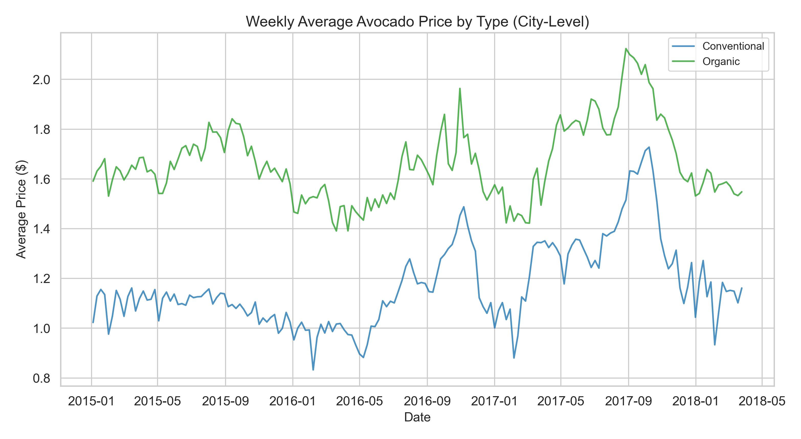
Volume Overview
Conventional: 3.41B total, ~20.2M/week. Organic: 103M total, ~609K/week (2.9% of total).
PLU Code Dominance
| Year | PLU 4046 | PLU 4225 | PLU 4770 |
|---|---|---|---|
| 2015 | 45.4% | 50.5% | 4.1% |
| 2016 | 41.9% | 53.2% | 4.9% |
| 2017 | 47.1% | 49.8% | 3.2% |
| 2018 | 48.5% | 48.7% | 2.8% |
4046 gaining share from 2016 onward. By 2018, the two dominant PLUs are at near-parity.
Volume Trends by Type
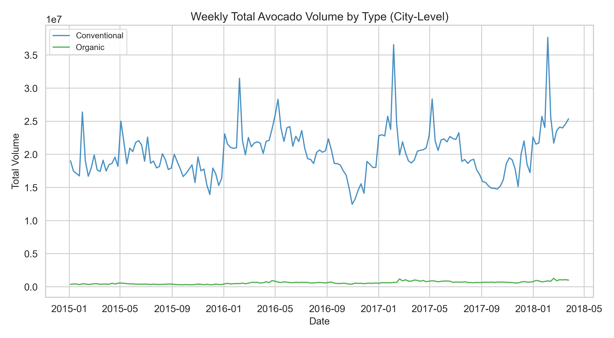
PLU Mix Over Time
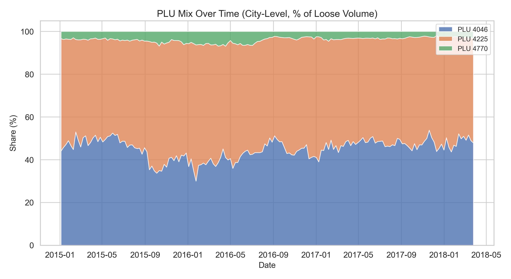
Bag Size Mix
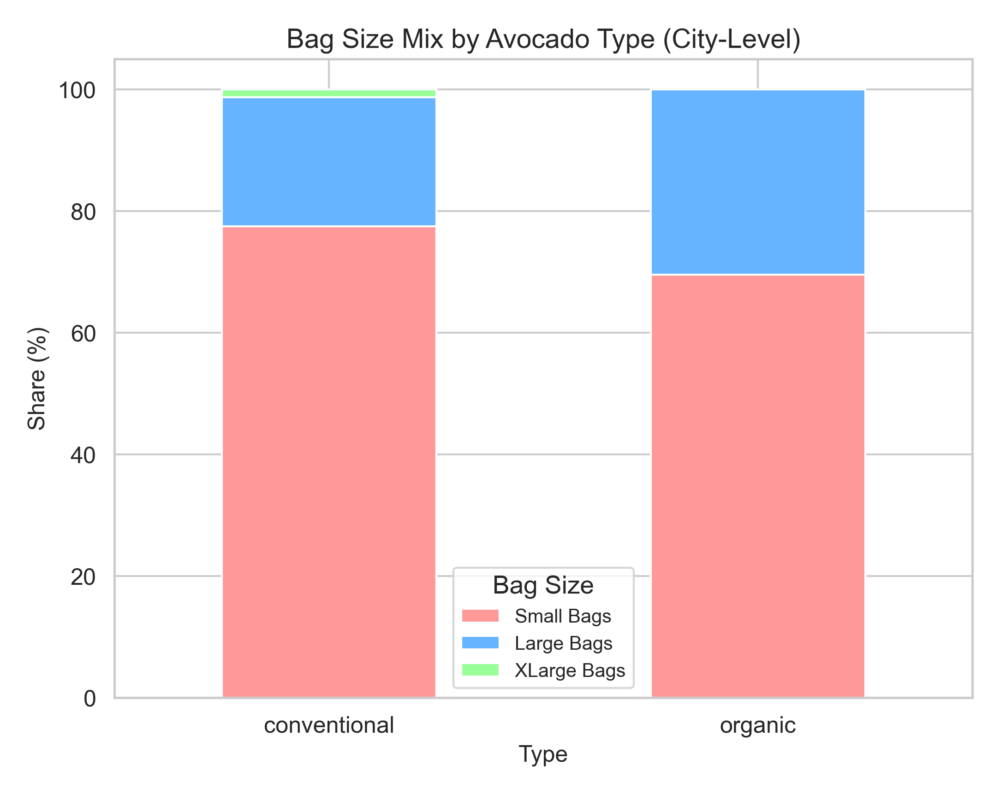
Seasonality (STL Decomposition)
| Metric | Conv. Price | Org. Price | Conv. Volume | Org. Volume |
|---|---|---|---|---|
| Peak Week | 39 (late Sep) | 37 (mid-Sep) | 5 (early Feb) | 7 (mid-Feb) |
| Trough Week | 5 (early Feb) | 5 (early Feb) | 47 (late Nov) | 46 (mid-Nov) |
| Seasonal Amplitude | $0.84 | $0.66 | 22.8M | 672K |
| Strength | 0.623 | 0.673 | 0.817 | 0.758 |
Prices peak fall, volume peaks winter — inverse pattern. Volume seasonality stronger than price.
Seasonality Decomposition
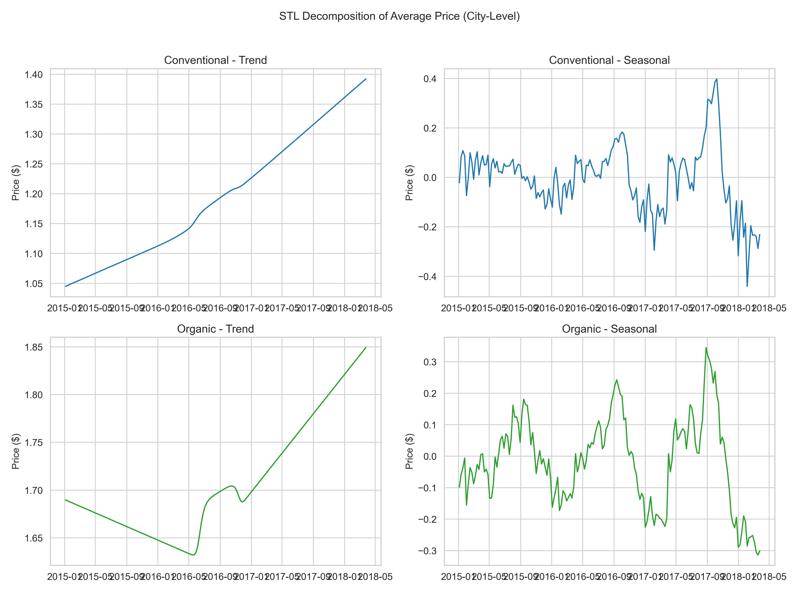
Top & Bottom Regions
| Rank | Highest Price | Avg | Highest Volume | Total |
|---|---|---|---|---|
| 1 | Hartford-Springfield | $1.82 | Los Angeles | 508M |
| 2 | San Francisco | $1.80 | New York | 241M |
| 3 | New York | $1.73 | Dallas-Fort Worth | 208M |
| 4 | Philadelphia | $1.63 | Houston | 203M |
| 5 | Sacramento | $1.62 | Phoenix-Tucson | 196M |
High-volume markets (LA, Dallas, Houston) have lowest prices. Premium-priced markets (Hartford, SF) have lower volume. Inverse relationship.
Top Regions by Volume
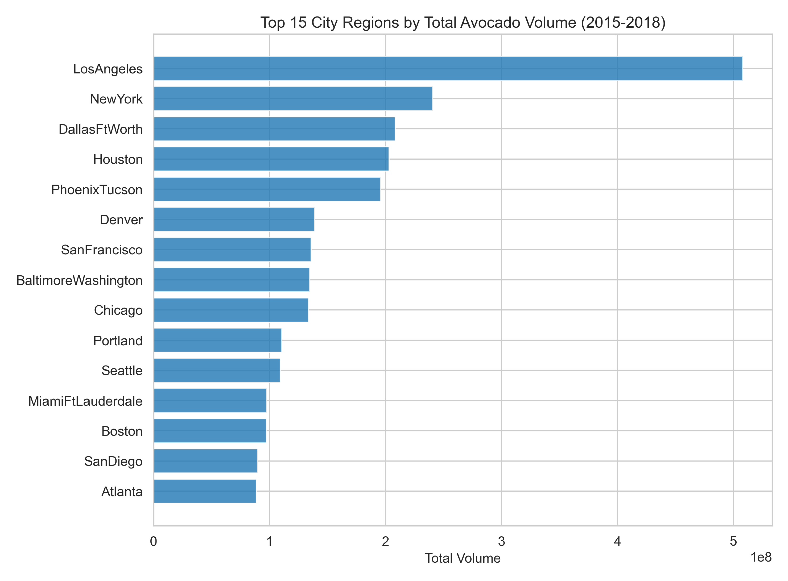
Price Distribution by Region
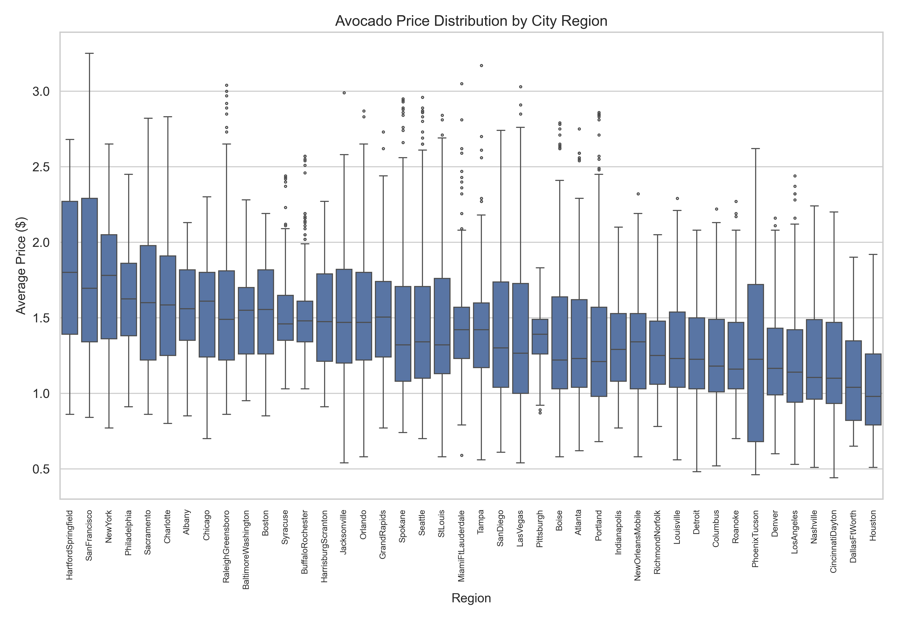
Diagnostic Analysis
"Why did it happen?" — Elasticity, regional drivers, premium decomposition, supply-demand dynamics
Elasticity by Type
| Metric | Conventional | Organic |
|---|---|---|
| Mean elasticity | -0.718 | -1.260 |
| Median elasticity | -0.771 | -1.128 |
| Elastic regions (|e|>1) | 4 / 42 | 24 / 42 |
| Significant (p<0.05) | 41 / 42 | 39 / 42 |
Conventional: predominantly inelastic. 10% price increase costs ~7.7% volume. Organic: elastic at median — 10% price increase costs 11.3% volume.
Most Price-Sensitive Conv. Markets
Pittsburgh (-1.41), Buffalo-Rochester (-1.14), Detroit (-1.10), Grand Rapids (-1.01)
Least Price-Sensitive Conv. Markets
Charlotte (-0.27), Raleigh-Greensboro (-0.30), Harrisburg-Scranton (-0.41), Boston (-0.41)
Elasticity by Region
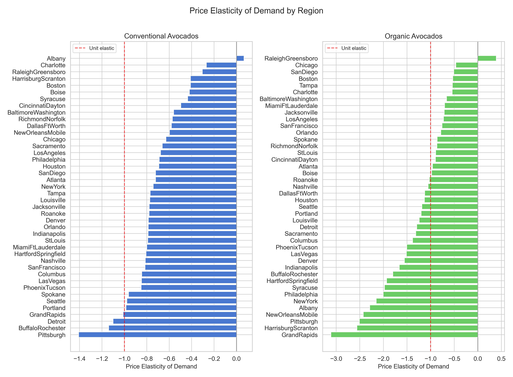
Price vs Volume Scatter
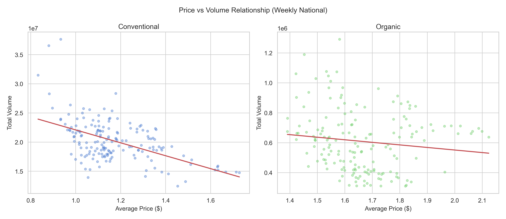
Four Regional Archetypes (K-Means, k=4)
| Cluster | N | Avg Price | Avg Vol | Vol Growth | Description |
|---|---|---|---|---|---|
| 0 | 10 | $1.60 | 294K | -1.1% | High-price stagnant metros |
| 1 | 16 | $1.34 | 115K | +25.5% | Growth markets — mid-tier cities |
| 2 | 5 | $1.16 | 742K | +9.3% | Mega-markets — high volume, low price |
| 3 | 11 | $1.48 | 173K | +18.7% | Moderate-growth Southern/coastal |
Outliers: Nashville (+46.6%) and Pittsburgh (+48.0%) growth far exceeds cluster peers.
Regional Clusters — Price vs Volume
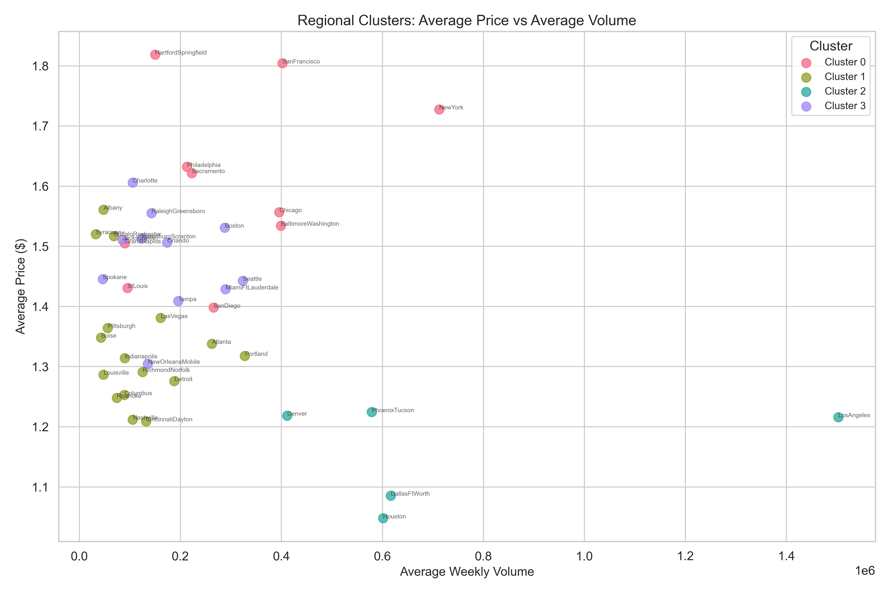
Organic Premium Decomposition
Regional Variation
| Highest Premium | $ | Lowest Premium | $ |
|---|---|---|---|
| Phoenix-Tucson | $0.99 | Pittsburgh | $0.23 |
| Hartford-Springfield | $0.82 | Syracuse | $0.27 |
| San Francisco | $0.81 | Buffalo-Rochester | $0.27 |
| Las Vegas | $0.74 | Denver | $0.29 |
| Sacramento | $0.70 | Roanoke | $0.30 |
Seasonal Variation
Highest: Aug-Sep ($0.55). Lowest: March ($0.41). Amplitude: $0.14 (~28% of mean).
Organic Premium by Region
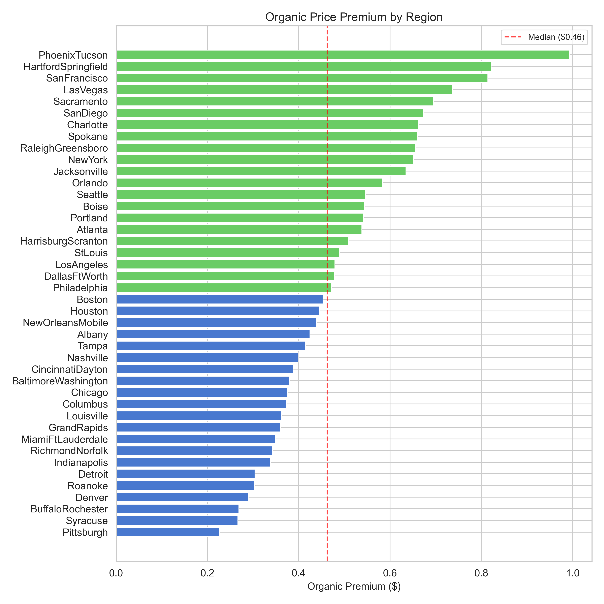
Organic Premium Seasonal Pattern
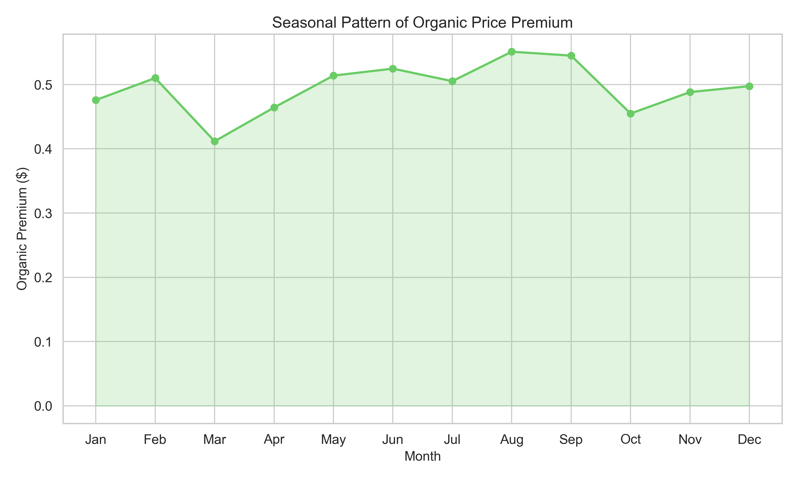
Supply-Demand Dynamics
Cross-Correlation (Price vs Volume Changes)
| Lag | Conv. r | Organic r |
|---|---|---|
| 0 weeks | -0.854 | -0.481 |
| 1 week | +0.235 | +0.186 |
| 2 weeks | +0.113 | +0.077 |
Strong contemporaneous negative correlation — when prices move, volume moves opposite same week. Lag-1 reversal suggests partial rebound.
Top 5 Price Spike Events
| Date | Price Change | Volume Change | Driver |
|---|---|---|---|
| 2017-02-19 | +16.2% | -19.6% | Supply-side |
| 2016-02-14 | +15.7% | -29.8% | Supply-side |
| 2018-02-11 | +13.8% | -32.1% | Supply-side |
| 2018-01-07 | +13.6% | -4.7% | Supply-side |
| 2018-02-18 | +11.5% | -15.2% | Supply-side |
All supply-driven. 4/5 occur Jan-Feb — recurring seasonal supply constraint (Mexican harvest gaps).
Price-Volume Lag Correlation
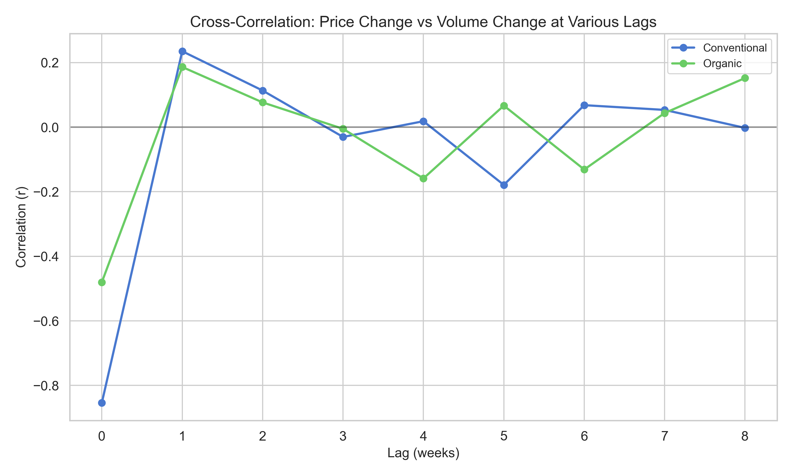
PLU Price Sensitivity
| PLU | Elasticity | R² | Interpretation |
|---|---|---|---|
| 4046 (small Hass) | -2.882 | 0.144 | Highly elastic — volume swings with price |
| 4225 (large Hass) | -0.277 | 0.003 | Very inelastic — stable demand base |
| 4770 (XL Hass) | -2.405 | 0.057 | Highly elastic — niche product |
PLU 4225 serves a stable, price-insensitive segment. When prices rise, consumers substitute toward 4225 and away from 4046 (r = -0.325 for 4046 share vs price, r = +0.317 for 4225).
Bag Size Shift
Small bag share declined 83% to 72% (conv, 2015-2018). Large bags grew 16% to 26%. Shift toward larger bags — possible bulk-buying trend.
Predictive Analysis
"What will happen?" — 26-week ARIMA forecasts for top 10 city-level markets
Price Forecast Accuracy
| Region | Conv. Order | Conv. MAPE | Status | Org. Order | Org. MAPE | Status |
|---|---|---|---|---|---|---|
| New York | (1,0,1) | 9.2% | OK | (3,1,1) | 8.1% | OK |
| Baltimore-Wash. | (0,1,1) | 10.5% | OK | (0,1,2) | 13.5% | OK |
| Dallas-FW | (2,0,1) | 14.4% | OK | (1,0,2) | 13.2% | OK |
| Chicago | (1,1,1) | 17.1% | OK | (1,0,1) | 7.4% | OK |
| Denver | (2,1,2) | 16.4% | OK | (1,0,2) | 20.0% | FAIL |
| Houston | (1,0,1) | 18.1% | OK | (1,0,1) | 21.3% | FAIL |
| Portland | (1,0,2) | 20.7% | FAIL | (2,1,1) | 28.5% | FAIL |
Conventional Price Forecasts
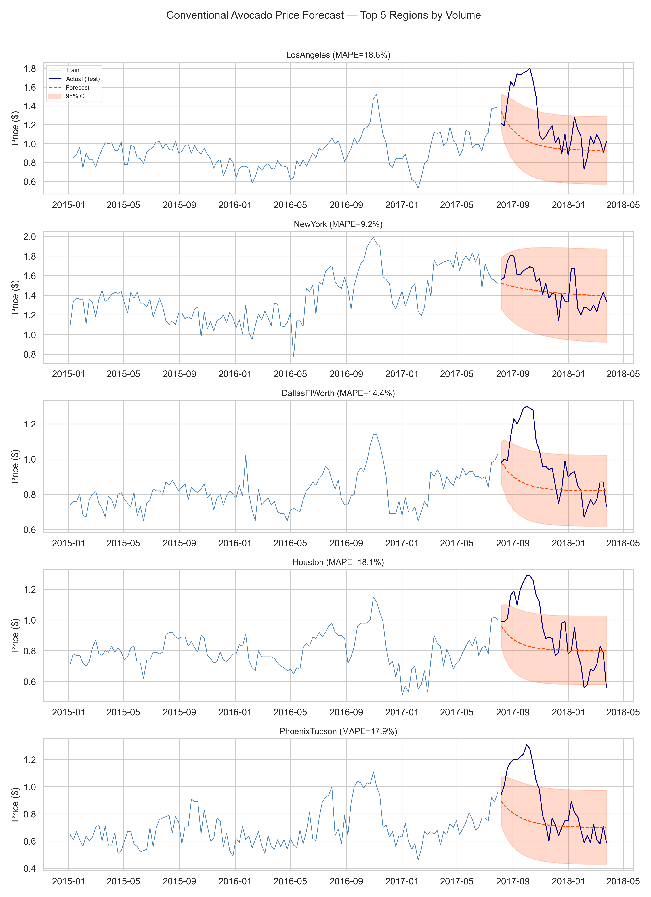
Organic Price Forecasts
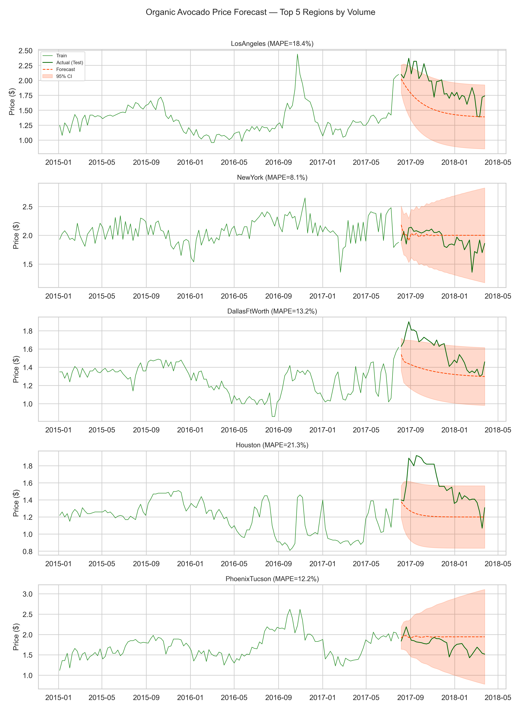
Volume Forecast Reliability
Half of conventional and 60% of organic volume forecasts exceed 20% MAPE. Volume planning should use these directionally.
Reliable
- Baltimore-Washington: Conv 13.6%, Org 17.9%
- Dallas-Fort Worth: Conv 17.3%
- New York: Conv 17.2%, Org 18.5%
Unreliable
- Denver organic: 81.5% MAPE — unforecastable
- Portland organic: 60.4%
- San Francisco organic: 45.5%
Volume Forecasts by Type
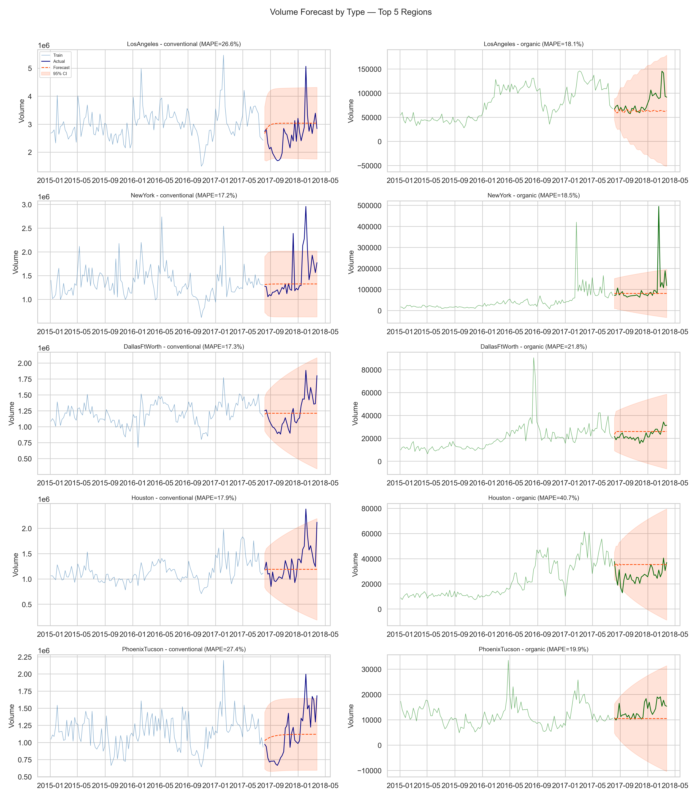
Growth Market Identification (STL Trend Slope)
| Rank | Top Growth | Rate | Top Decline | Rate |
|---|---|---|---|---|
| 1 | Buffalo-Rochester | +29.3% | Portland | -5.9% |
| 2 | Grand Rapids | +28.0% | Dallas-Fort Worth | -5.6% |
| 3 | Pittsburgh | +28.0% | Denver | -4.9% |
| 4 | Harrisburg-Scranton | +26.6% | Cincinnati-Dayton | -3.6% |
| 5 | Indianapolis | +25.0% |
Growth Markets — Trend Slopes
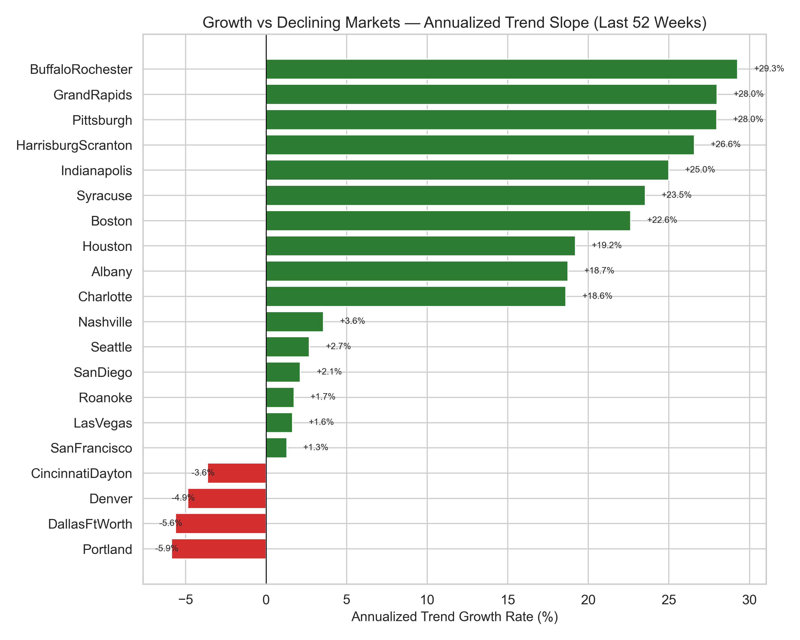
Forecast Accuracy Heatmap — MAPE by Region × Type
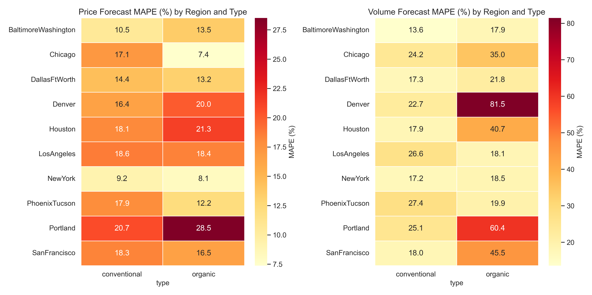
Pattern Summary
Price is more forecastable than volume. Organic volume is hardest — smaller absolute volumes with higher relative volatility inflate percentage errors. Regions forecastable for price are not necessarily forecastable for volume.
Seasonal Projection
| Metric | Conventional | Organic |
|---|---|---|
| Peak Price Week | 39 (late Sep) +$0.191 | 37 (mid-Sep) +$0.227 |
| Trough Price Week | 5 (late Jan) -$0.240 | 5 (late Jan) -$0.204 |
| Amplitude | $0.430 | $0.431 |
| Strength | 0.691 | 0.751 |
Organic peak arrives ~2 weeks earlier than conventional. Next expected peak: ~Sep 2018. Next trough: ~Jan-Feb 2019.
Prescriptive Analysis
"What should we do?" — Revenue-optimal pricing, allocation strategy, organic opportunity, seasonal timing
Top 10 Conventional Markets for 5% Price Increase
| Region | Current | Recommended | Elasticity | R² | Revenue Impact | Confidence |
|---|---|---|---|---|---|---|
| Charlotte | $1.28 | $1.34 | -0.27 | 0.045 | +3.6% | Low |
| Raleigh-Greensboro | $1.23 | $1.29 | -0.30 | 0.046 | +3.5% | Low |
| Boston | $1.30 | $1.37 | -0.41 | 0.132 | +2.9% | Med |
| Boise | $1.08 | $1.13 | -0.42 | 0.176 | +2.9% | Med |
| Cincinnati-Dayton | $1.02 | $1.07 | -0.50 | 0.247 | +2.5% | Med |
| Baltimore-Wash. | $1.34 | $1.41 | -0.56 | 0.283 | +2.2% | Med |
| Dallas-Fort Worth | $0.85 | $0.89 | -0.58 | 0.304 | +2.1% | Med |
Optimal vs Actual Price
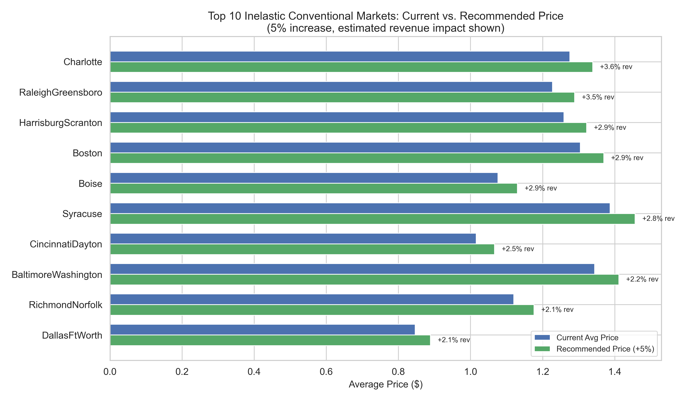
Strategic Allocation Matrix
| Quadrant | Count | Key Markets | Strategy |
|---|---|---|---|
| Growth + Inelastic | 21 | Boston, Charlotte, Atlanta, BaltWash | Increase supply AND raise prices |
| Growth + Elastic | 17 | Buffalo-Rochester, Grand Rapids, Pittsburgh | Push volume, hold price |
| Decline + Inelastic | 2 | Dallas-FW, Cincinnati-Dayton | Raise prices (harvest) |
| Decline + Elastic | 2 | Portland, Denver | Reduce investment, reallocate |
Allocation Matrix — Growth vs Elasticity
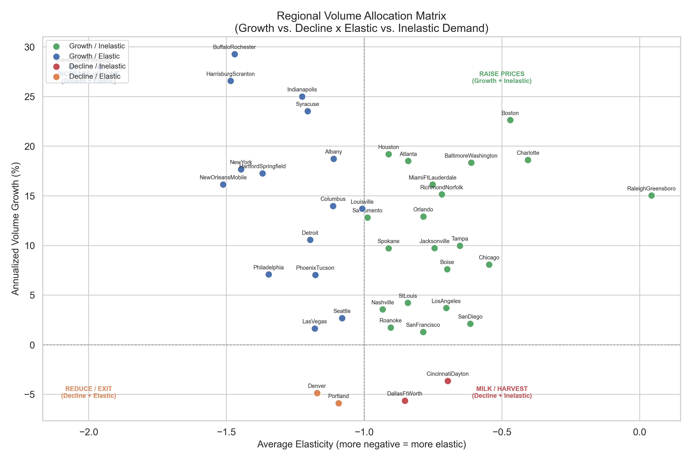
Growth Markets
Organic Shift Opportunities
| Region | Premium | Org. Elasticity | R² | Action |
|---|---|---|---|---|
| San Francisco | $0.81 | -0.76 | 0.337 | Shift to organic |
| San Diego | $0.67 | -0.51 | 0.120 | Shift to organic |
| Spokane | $0.66 | -0.86 | 0.288 | Shift to organic |
| Los Angeles | $0.48 | -0.73 | 0.144 | Shift — scale play |
Avoid Organic Expansion
| Region | Premium | Org. Elasticity | Reason |
|---|---|---|---|
| Grand Rapids | $0.36 | -3.11 | Extremely elastic organic demand |
| Pittsburgh | $0.23 | -2.51 | Lowest premium, highest sensitivity |
| Phoenix-Tucson | $0.99 | -1.50 | High premium but elastic — not sustainable |
Organic Opportunity Map
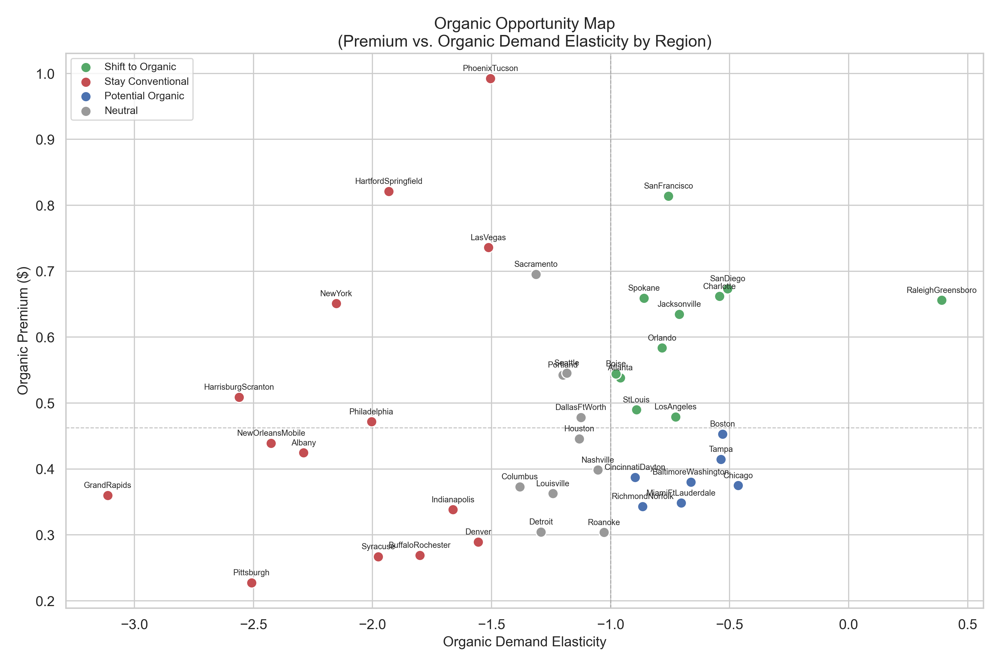
Organic Premium by Region
Seasonal Pricing Strategy
Raise Prices: Weeks 28-47 (Jul-Nov)
Conventional prices average $1.28 vs annual mean $1.17 (+$0.11). Volume below average. Peak window: weeks 37-43 — raise additional 3-5% above seasonal norms in inelastic markets.
Promote: Weeks 1-9 and 16-19 (Jan-Feb, Late Apr)
Prices average $1.10, volume above average. Super Bowl (Wk 5): volume z-score +4.32. Cinco de Mayo (Wk 18-19): z-score +2.38. Run volume-based promos, not deep discounts.
Seasonal Pricing Calendar
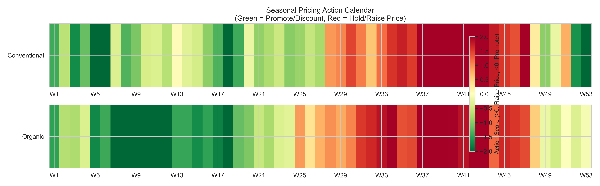
Sensitivity Analysis — 5% Price Increase
| Region | Base | e 20% Less Negative | e 20% More Negative |
|---|---|---|---|
| Charlotte | +3.6% | +3.9% | +3.4% |
| Boston | +2.9% | +3.3% | +2.5% |
| Baltimore-Wash. | +2.2% | +2.7% | +1.6% |
| Chicago | +1.8% | +2.5% | +1.2% |
| Houston | +1.5% | +2.2% | +0.8% |
| Dallas-FW | +2.1% | +2.7% | +1.5% |
| Los Angeles | +1.6% | +2.3% | +0.9% |
| New York | +1.3% | +2.0% | +0.5% |
| San Francisco | +0.9% | +1.7% | +0.1% |
All inelastic markets remain revenue-positive even worst-case. SF is marginal (+0.1%).
Implementation Priority
| # | Action | Impact | Confidence | Complexity |
|---|---|---|---|---|
| 1 | Price +5% Baltimore-Washington | +2.2% (~$22,500/wk) | High | Low |
| 2 | Price +5% Boston | +2.9% (~$21,000/wk) | Med | Low |
| 3 | Organic shelf SF | +$0.81/unit premium | Med | Medium |
| 4 | Seasonal pricing Wk 37-43 | +1-3% revenue | High | Medium |
| 5 | Supply to growth markets | Capture 18-23% growth | Med | Medium |